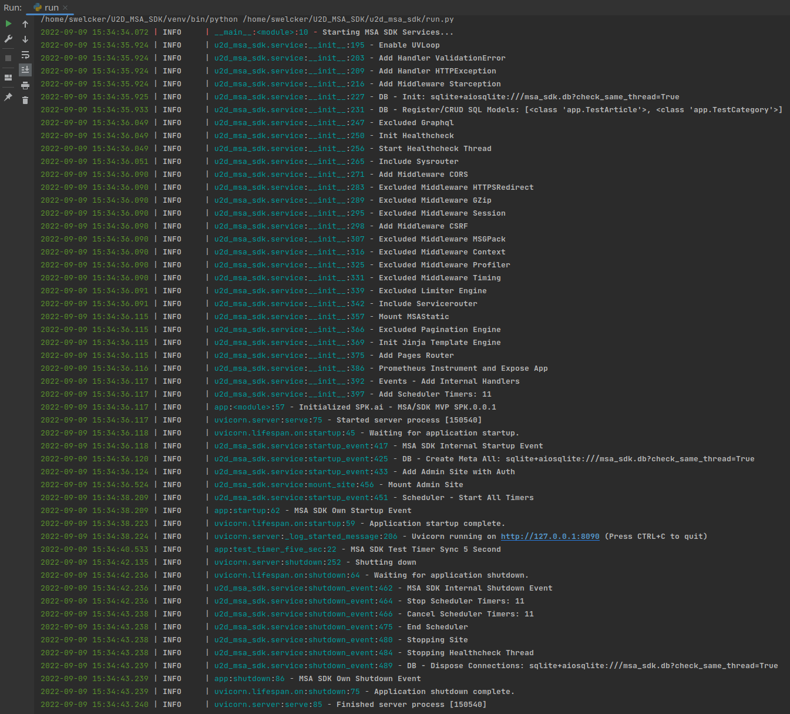

msaSDK - FastAPI based Microservice Architecture Development Kit
To build PoC's, MVP's, API's with CRUD and Dashboards fast and consistent.
Build on top of FastAPI, SQLModel, SQLAlchemy, Amis and many other bullet proofed libraries.


Features¶
- Build connected distributed applications faster: Ready for Dapr..
- Consistency: With sometimes 10s or 100s of Micro Services, the SDK helps to easy version control and provides a stable Dapr Basis.
- High performance: Based on FastAPI. Enjoy all the benefits.
- High efficiency: Perfect code type hints. Higher code reusability.
- Support asynchronous and synchronous hybrid writing:
ORMis based onSQLModel&Sqlalchemy. Freely customize database type. Asynchronous mode. Strong scalability. - Front-end separation: The front-end is rendered by
Amis, the back-end interface is automatically generated bymsaSDK - Admin. The interface is reusable. - Strong scalability: The background page supports
Amispages and ordinaryhtmlpages. Easily customize the interface freely. - Automatic api documentation: Automatically generate Interface documentation by
FastAPI. Easily debug and share interfaces. - Integrated Scheduler: Define Scheduler Tasks with natural language timings and dependencies.
- Dashboard UI: Admin and Optional Auth enabled Dashboard with CRUD Forms.
- Integrated CRUD: Generates CRUD Router and Admin Dashboard Forms based on SQLModel and SQLAlchemy.
Dependencies¶
- FastAPI
- SQLModel combined with SQLAlchemy and Pydantic, with all their features .
- Amis: Vue Frontend
Usage example is in the app module __init__.py¶
# -*- encoding: utf-8 -*-
from typing import Optional, List
from sqlmodel import SQLModel
from msaSDK.admin.utils.fields import Field
from msaSDK.models.service import get_msa_app_settings
from msaSDK.service import MSAApp
async def test_timer_min():
app.logger.info("msaSDK Test Timer Async Every Minute")
def test_timer_five_sec():
app.logger.info("msaSDK Test Timer Sync 5 Second")
class TestArticle(SQLModel, table=True):
__table_args__ = {'extend_existing': True}
id: Optional[int] = Field(default=None, primary_key=True, nullable=False)
title: str = Field(title='ArticleTitle', max_length=200)
description: Optional[str] = Field(default='', title='ArticleDescription', max_length=400)
status: bool = Field(None, title='status')
content: str = Field(title='ArticleContent')
class TestCategory(SQLModel, table=True):
__table_args__ = {'extend_existing': True}
id: Optional[int] = Field(default=None, primary_key=True, nullable=False)
title: str = Field(title='ArticleTitle', max_length=200)
description: Optional[str] = Field(default='', title='ArticleDescription', max_length=400)
status: bool = Field(None, title='status')
content: str = Field(title='ArticleContent')
get_msa_app_settings.cache_clear()
settings = get_msa_app_settings()
settings.title = "u2d.ai - MSA/SDK MVP"
settings.version = "0.0.1"
settings.debug = True
app = MSAApp(settings=settings, auto_mount_site=True,
sql_models=[TestArticle, TestCategory],
contact={"name": "msaSDK", "url": "http://u2d.ai", "email": "stefan@u2d.ai"},
license_info={"name": "MIT", "url": "https://opensource.org/licenses/MIT", })
app.scheduler.task("every 1 min", func=test_timer_min )
app.scheduler.task("every 5 sec", func=test_timer_five_sec )
app.logger.info("Initialized " + settings.title + " " + settings.version)
@app.on_event("startup")
async def startup():
app.logger.info("msaSDK Own Startup MSAUIEvent")
#app.mount_site()
@app.on_event("shutdown")
async def shutdown():
app.logger.info("msaSDK Own Shutdown MSAUIEvent")
if __name__ == '__main__':
pass
Typical Run Log¶

Interface Preview¶
Home Screen with System Info¶
- Open
http://127.0.0.1:8090/admin/in your browser:
CRUD of SQLModels Screen¶

Login Screen¶
- Open
http://127.0.0.1:8090/admin/auth/form/loginin your browser:
OpenAPI Interactive Documentation (Swagger) Screen¶
- Open
http://127.0.0.1:8090/#/admin/docsin your browser:
Profiler Screen¶
- Open
http://127.0.0.1:8090/#/admin/profilerin your browser:
License Agreement¶
msaSDKBased onMITopen source and free to use, it is free for commercial use, but please clearly show the copyright information about msaSDK - Auth Admin in the display interface.
How to create the documentation¶
We use mkdocs and mkdocsstring. The code reference and nav entry get's created virtually by the triggered python script /docs/gen_ref_pages.py while mkdocs serve or build is executed.
Requirements Install for the PDF creation option:¶
PDF Export is using mainly weasyprint, if you get some errors here pls. check there documentation. Installation is part of the msaSDK, so this should be fine.
We can now test and view our documentation using:
mkdocs serve
Build static Site:
mkdocs build